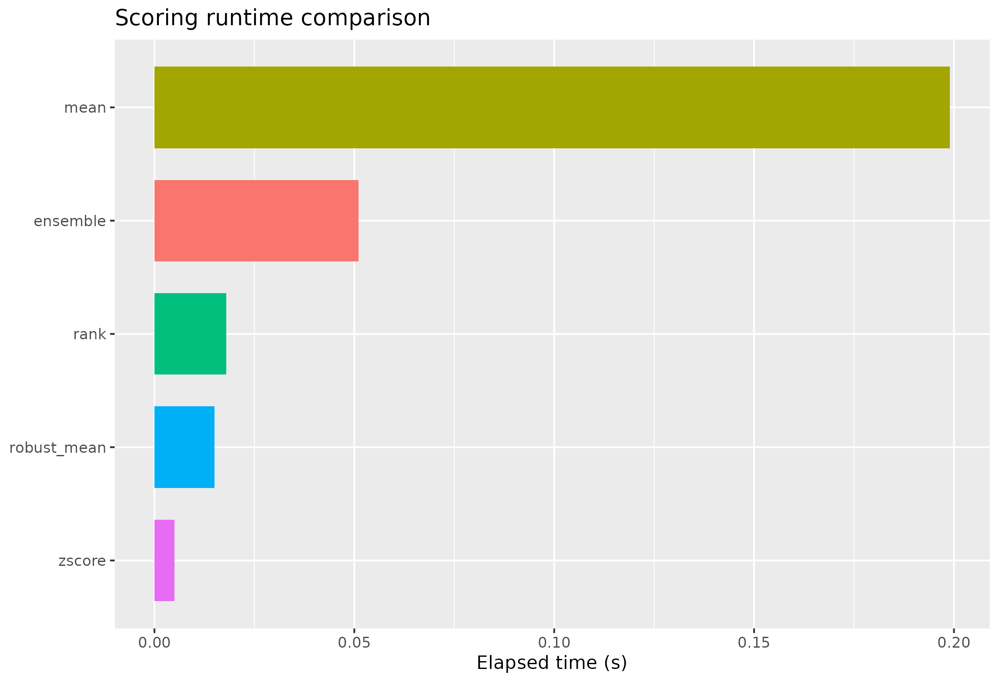
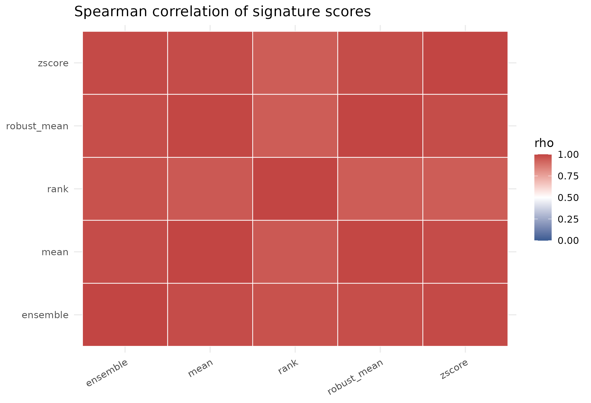
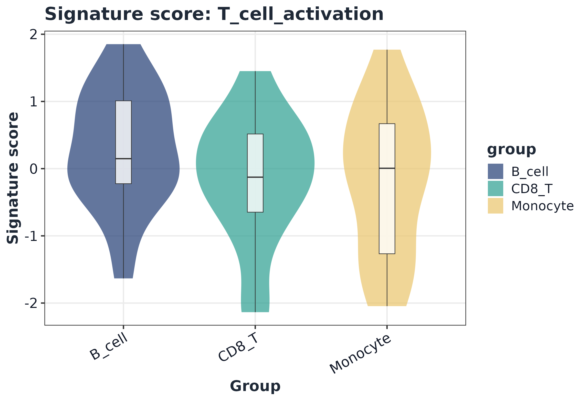

1) Load benchmark input
data("toy_expr", package = "GLEAM")
expr <- toy_expr$expr
meta <- toy_expr$meta
geneset <- "immune_small"
dim(expr)
#> [1] 120 60
head(meta)
#> cell_id sample group celltype donor batch condition
#> toy_cell_001 toy_cell_001 S01 control B_cell D1 B1 control
#> toy_cell_002 toy_cell_002 S01 control B_cell D1 B1 control
#> toy_cell_003 toy_cell_003 S01 control B_cell D1 B1 control
#> toy_cell_004 toy_cell_004 S01 control B_cell D1 B1 control
#> toy_cell_005 toy_cell_005 S01 control CD8_T D1 B1 control
#> toy_cell_006 toy_cell_006 S01 control CD8_T D1 B1 control
#> pseudotime lineage
#> toy_cell_001 0.00000000 L1
#> toy_cell_002 0.01694915 L1
#> toy_cell_003 0.03389831 L1
#> toy_cell_004 0.05084746 L1
#> toy_cell_005 0.06779661 L1
#> toy_cell_006 0.08474576 L12) Methods compared
base_methods <- c("rank", "mean", "zscore", "robust_mean", "ensemble")
optional_methods <- c()
if (requireNamespace("UCell", quietly = TRUE)) optional_methods <- c(optional_methods, "UCell")
if (requireNamespace("AUCell", quietly = TRUE)) optional_methods <- c(optional_methods, "AUCell")
if (requireNamespace("GSVA", quietly = TRUE)) optional_methods <- c(optional_methods, "ssGSEA")
methods <- c(base_methods, optional_methods)
methods
#> [1] "rank" "mean" "zscore" "robust_mean" "ensemble"3) Runtime benchmark
bench <- lapply(methods, function(m) {
t0 <- proc.time()
sc <- score_signature(
expr = expr,
meta = meta,
geneset = geneset,
seurat = FALSE,
method = m,
min_genes = 3,
ensemble_methods = c("rank", "zscore", "mean"),
ensemble_standardize = "zscore",
verbose = FALSE
)
elapsed <- unname((proc.time() - t0)[["elapsed"]])
list(method = m, score = sc$score, elapsed = elapsed)
})
runtime_df <- data.frame(
method = vapply(bench, `[[`, character(1), "method"),
elapsed_sec = vapply(bench, `[[`, numeric(1), "elapsed"),
stringsAsFactors = FALSE
)
runtime_df <- runtime_df[order(runtime_df$elapsed_sec), , drop = FALSE]
runtime_df
#> method elapsed_sec
#> 3 zscore 0.005
#> 4 robust_mean 0.015
#> 1 rank 0.018
#> 5 ensemble 0.051
#> 2 mean 0.199
ggplot(runtime_df, aes(x = reorder(method, elapsed_sec), y = elapsed_sec, fill = method)) +
geom_col(width = 0.72, show.legend = FALSE) +
coord_flip() +
labs(x = NULL, y = "Elapsed time (s)", title = "Scoring runtime comparison")
4) Score correlation across methods
score_vec <- lapply(bench, function(x) as.numeric(x$score))
names(score_vec) <- vapply(bench, `[[`, character(1), "method")
mat <- do.call(cbind, score_vec)
colnames(mat) <- names(score_vec)
cor_mat <- stats::cor(mat, use = "pairwise.complete.obs", method = "spearman")
round(cor_mat, 3)
#> rank mean zscore robust_mean ensemble
#> rank 1.000 0.951 0.940 0.941 0.969
#> mean 0.951 1.000 0.983 0.996 0.983
#> zscore 0.940 0.983 1.000 0.982 0.988
#> robust_mean 0.941 0.996 0.982 1.000 0.979
#> ensemble 0.969 0.983 0.988 0.979 1.000
cor_df <- as.data.frame(as.table(cor_mat), stringsAsFactors = FALSE)
colnames(cor_df) <- c("method_x", "method_y", "rho")
ggplot(cor_df, aes(method_x, method_y, fill = rho)) +
geom_tile(color = "white", linewidth = 0.35) +
scale_fill_gradient2(low = "#3B5B92", high = "#C24543", mid = "white", midpoint = 0.5, limits = c(0, 1)) +
theme_minimal(base_size = 12) +
theme(axis.title = element_blank(), axis.text.x = element_text(angle = 30, hjust = 1)) +
labs(title = "Spearman correlation of signature scores")
5) Visualization example
sc_ens <- score_signature(
expr = expr,
meta = meta,
geneset = geneset,
seurat = FALSE,
method = "ensemble",
ensemble_methods = c("rank", "zscore", "mean"),
ensemble_standardize = "zscore",
min_genes = 3,
verbose = FALSE
)
sig <- rownames(sc_ens$score)[1]
plot_violin(sc_ens, signature = sig, group = "celltype", point_size = 0)